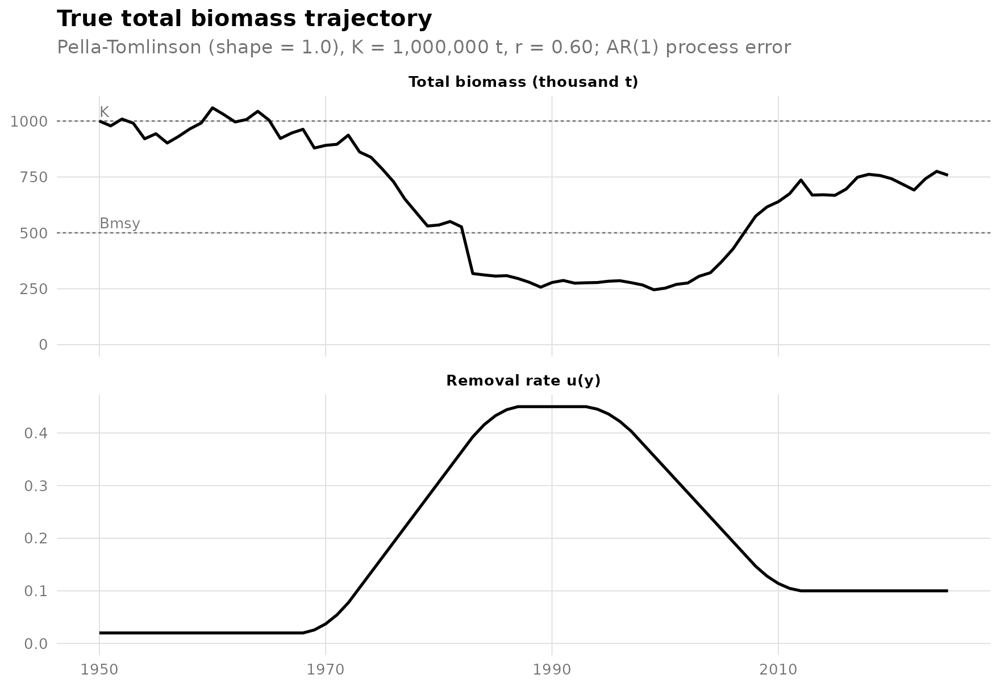
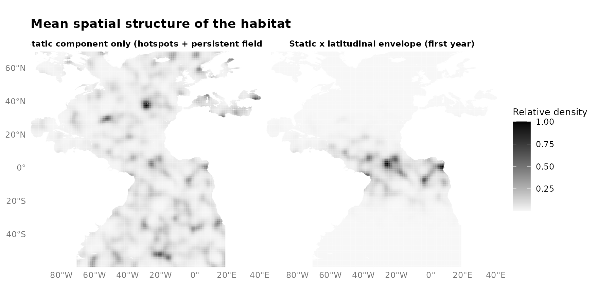
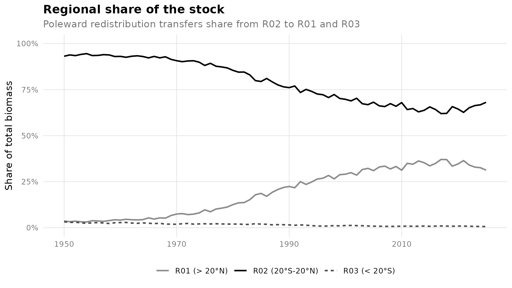
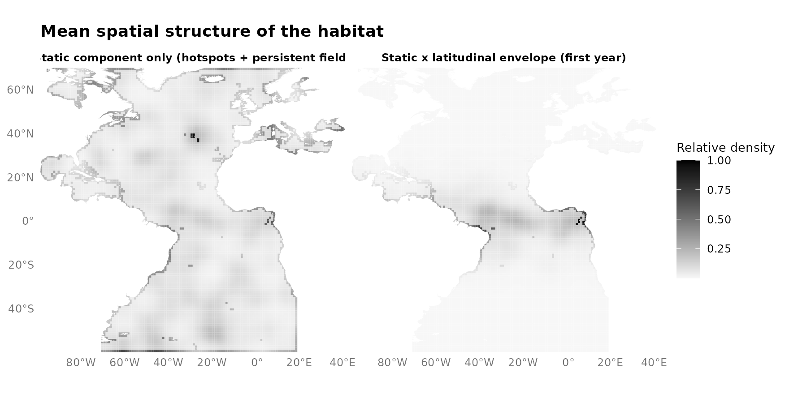
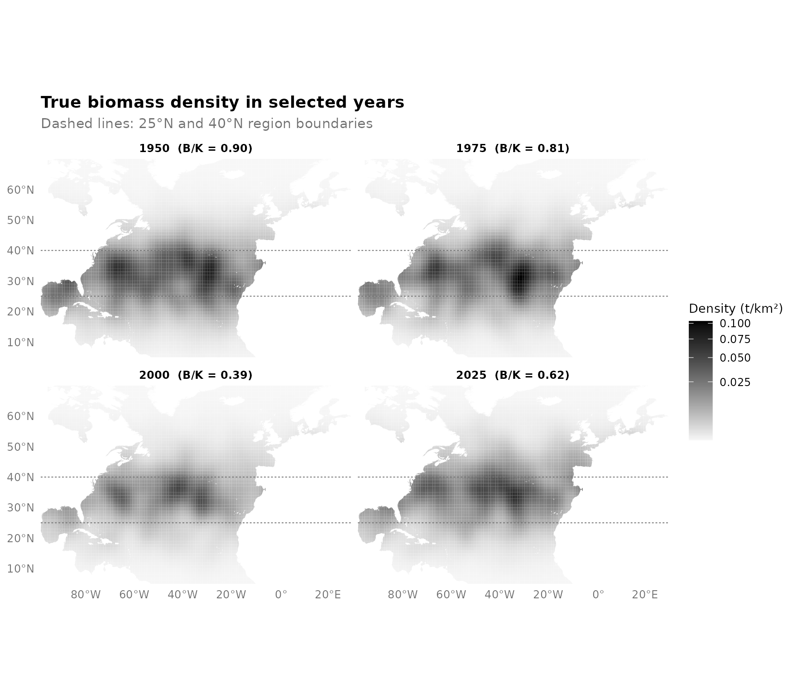
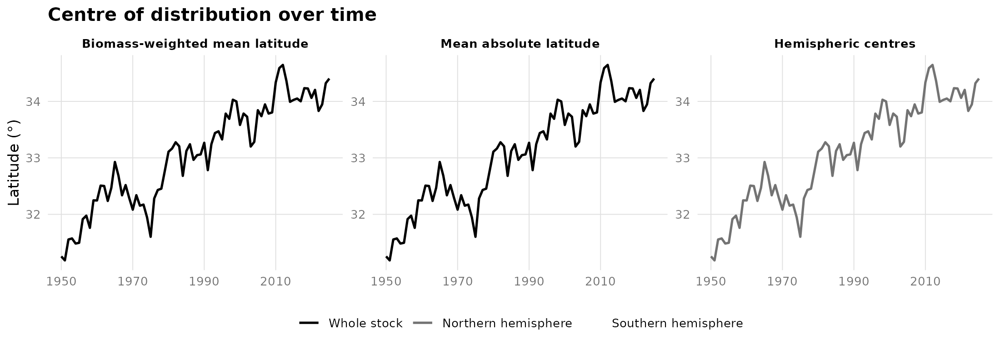
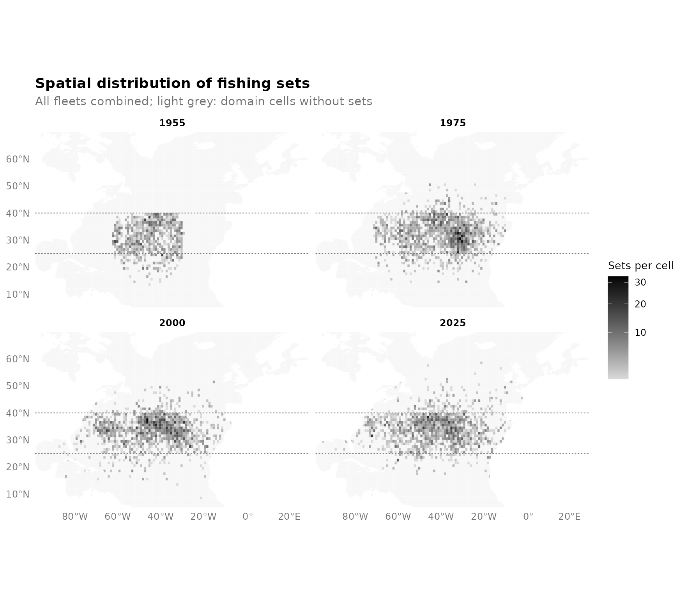
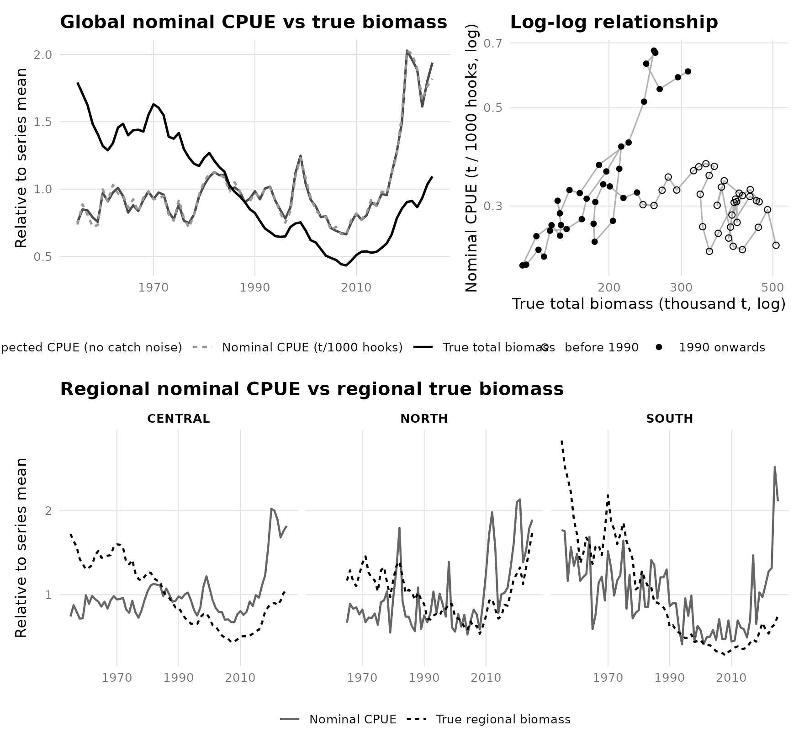
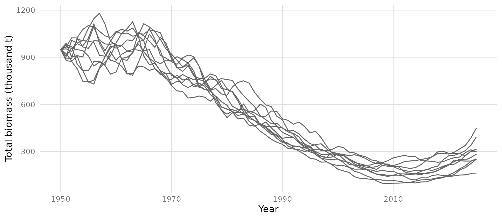

Tuning the operating model: other species, distributions and fleets
Source:vignettes/articles/tuning.Rmd
tuning.RmdHow configurations work
All parameters live in two lists: om_biomass_config()
(Part I) and om_fishery_config() (Part II). Both start from
a preset (om_presets()). They are changed in three
ways:
- in the call to the configuration function, through
...; - with
om_config_update(); - by plain assignment (
cfg$population$r <- 0.4).
om_config_update() follows four rules:
- named lists are merged level by level, so only the given elements change;
- vectors and unnamed lists (hotspots, events, scenarios, observation periods) replace the original value entirely;
-
NULLremoves an element (for example a fleet); - new names are accepted and reported with a message, which also catches typos.
cfg <- om_biomass_config("BET_ICCAT")
cfg2 <- om_config_update(cfg,
population = list(r = 0.45, decline = list(u_peak = 0.35)),
shift = list(center_drift = 3))
c(cfg2$population$r, cfg2$population$decline$u_peak,
cfg2$population$decline$start)
#> [1] 0.45 0.35 1965.00
cfg3 <- om_config_update(cfg, population = list(R = 0.45)) # typo: reported
#> om_config_update(): new element(s) added: population$RThe simulation functions validate the configuration and stop with an explicit message when something is incoherent:
bad <- cfg; bad$spatial$region_labels <- c("N", "S")
simulate_biomass(bad, verbose = FALSE)
#> Error in `validate_biomass_config()`:
#> ! spatial$region_labels must have length(region_breaks) + 1 elements (ordered from north to south)Every parameter is listed in the configuration reference.
Recipes for the biomass
Productivity and history of exploitation
fast <- om_biomass_config("BET_ICCAT",
population = list(r = 0.6, B0_frac = 1,
decline = list(start = 1970, end = 1985, u_peak = 0.45),
recovery = list(start = 1995, end = 2010, u_end = 0.10),
events = list(list(year = 1983, log_shock = -0.4)),
K_trend = -0.002))
fig_total_biomass(simulate_biomass(fast, long_table = FALSE, verbose = FALSE))
Other production models
population$model accepts "pella_tomlinson"
(with shape), "logistic" or any function
f(B, K, r, shape). For a user function, the reference
points are found numerically:
fox <- function(B, K, r, shape) r * B * log(K / B) / log(K)
reference_points(om_config_update(cfg, population = list(model = fox))$population)[c("Bmsy", "MSY")]
#> $Bmsy
#> [1] 367879.4
#>
#> $MSY
#> [1] 7988.401Spatial structure
patchy <- om_biomass_config("BET_ICCAT",
habitat = list(hotspots = list(
list(lon = -20, lat = 5, sd_lon = 6, sd_lat = 3, amp = 1.5),
list(lon = -40, lat = -10, sd_lon = 6, sd_lat = 3, amp = 1.2)),
lon_gradient = 0.01, field_sd = 0.8, field_range = 2),
shift = list(enabled = FALSE))
fig_base_habitat(simulate_biomass(patchy, long_table = FALSE, verbose = FALSE))
Asymmetric or drifting redistribution
north <- om_biomass_config("BET_ICCAT",
shift = list(north_expansion = 1.2, south_expansion = 0, center_drift = 4,
ramp = "logistic"))
s <- simulate_biomass(north, long_table = FALSE, verbose = FALSE)
fig_region_share(s)
A habitat layer of your own
habitat$custom_effect is a function of the cell table
that returns a log-scale value per cell. It is added to the static
habitat. It can hold a covariate or a distance to the coast, for
example. It should not draw random numbers, so that the order of the
random draws is kept.
coastal <- function(cells) 1.5 * (cells$Area_frac < 1) # boost coastal cells
s <- simulate_biomass(om_biomass_config("BET_ICCAT",
habitat = list(custom_effect = coastal)),
long_table = FALSE, verbose = FALSE)
fig_base_habitat(s)
Recipes for the fishery
fcfg <- om_fishery_config("BET_ICCAT")
## fleets: remove, resize, create
fcfg <- om_config_update(fcfg, fleets = list(E = NULL, A = list(n_vessels = 60)))
fcfg$fleets$F <- om_fleet(n_vessels = 25, year_start = 1985, regions = "R02",
core_lon = -10, core_lat = 0, q_effect = 0.2,
strategy_comp = c(S1 = 0.7, S2 = 0.2, S3 = 0.1))
## catchability: no creep, stronger HBF effect, no preferential sampling
fcfg <- om_config_update(fcfg,
catchability = list(creep_enabled = FALSE, hbf = list(effect = 2)),
spatial = list(preferential_sampling_strength = 0, fidelity = 0))
## catch process and seeds
fcfg$catch_process$distribution <- "delta_lognormal"
fcfg$reproducibility$seeds$catch <- 1Complete example: a temperate tuna in the North Atlantic
This example puts together several of the changes above:
- the ALB-N stock area with three regions;
- an envelope on the absolute latitude with a preferred latitude of 32 degrees, drifting 4 degrees poleward;
- two fleets;
- ALB as target species, with BET and SWO as companions;
- scenarios defined for the new regions.
dom <- om_domain_iccat("ALB-N", region_breaks = c(25, 40),
region_labels = c("NORTH", "CENTRAL", "SOUTH"))
#> domain ALB-N: 5070 cells | lattice 65 x 129
alb <- om_biomass_config("BET_ICCAT",
general = list(label = "alb_n", seed = 2027),
population = list(K = 5e5, r = 0.25, B0_frac = 0.90,
decline = list(start = 1960, end = 1990, u_peak = 0.20),
recovery = list(start = 2000, end = 2015, u_end = 0.08)),
habitat = list(envelope_type = "abs_latitude", lat_center = 32,
lat_sd_north = 7, lat_sd_south = 9,
hotspots = list(list(lon = -40, lat = 35, sd_lon = 12,
sd_lat = 5, amp = 0.8))),
shift = list(north_expansion = 0, south_expansion = 0,
center_drift = 4))
sim_alb <- simulate_biomass(alb, dom, verbose = FALSE)
sim_alb
#> <pelagicOM biomass truth> label 'alb_n' | seed 2027
#> 5070 cells x 76 years (1950-2025) | stock area ALB-N
#> B_total: 450,000 t (1950) -> 311,105 t (2025) | B/K 0.90 -> 0.62 | Bmsy 250,000 t
#> regional share: NORTH 0.07 -> 0.17 | CENTRAL 0.77 -> 0.76 | SOUTH 0.16 -> 0.07
fig_maps(sim_alb)
fig_centre_gravity(sim_alb)
fcfg_alb <- om_fishery_config("BET_ICCAT", general = list(label = "alb_n"))
fcfg_alb$fleets <- list(
JPN = om_fleet(n_vessels = 20, year_start = 1955,
regions = c("CENTRAL", "SOUTH"),
core_lon = -45, core_lat = 30),
TWN = om_fleet(n_vessels = 15, year_start = 1965,
regions = c("NORTH", "CENTRAL", "SOUTH"),
core_lon = -35, core_lat = 38, q_effect = -0.2,
strategy_comp = c(S1 = 0.2, S2 = 0.6, S3 = 0.2)))
fcfg_alb$catchability$region_effect <- c(NORTH = 0, CENTRAL = 0, SOUTH = 0)
fcfg_alb$species$target <- "ALB"
fcfg_alb$species$companions <- c("BET", "SWO")
fcfg_alb$species$params <- list(BET = fcfg_alb$species$params$YFT,
SWO = fcfg_alb$species$params$SWO)
fcfg_alb$scenarios <- list(
list(name = "01_all_complete", regions = c("NORTH", "CENTRAL", "SOUTH"),
drop = character(0), observation = "complete",
objective = "reference"),
list(name = "02_central_temporal", regions = "CENTRAL",
drop = character(0), observation = "temporal",
objective = "degraded early data"))
fish_alb <- simulate_fishery(sim_alb, fcfg_alb, verbose = FALSE)
fish_alb
#> <pelagicOM fishery truth> label 'alb_n'
#> 201,808 sets | 17,510 trips | 139 vessels | 2 fleets | 1955-2025
#> target catch: total 131,625 t | mean 0.652 t/set | zeros 40.3%
#> sets by fleet x region:
#>
#> CENTRAL NORTH SOUTH
#> JPN 113617 0 9244
#> TWN 62856 12372 3719
generate_scenarios(fish_alb, verbose = FALSE)
#> <pelagicOM scenario data sets> 2 data sets
#> 01_all_complete 201808 sets NORTH+CENTRAL+SOUTH complete
#> 02_central_temporal 167396 sets CENTRAL temporal
fig_effort_maps(fish_alb)
fig_cpue_vs_biomass(fish_alb)
Another ocean with a synthetic grid
## default regions R01 (> 20N), R02, R03 (< 20S), as in Experimento 02
basin <- om_domain_grid(lon = c(40, 100), lat = c(-40, 30),
exclude = function(lon, lat) lat > 10 & lon < 60,
verbose = FALSE)
table(basin$cells$Region)
#>
#> R01 R02 R03
#> 400 2200 1200
b_cfg <- om_biomass_config("BET_ICCAT",
habitat = list(hotspots = list(list(lon = 70, lat = -5, sd_lon = 10,
sd_lat = 5, amp = 1))))
b_sim <- simulate_biomass(b_cfg, basin, long_table = FALSE, verbose = FALSE)
f_cfg <- om_fishery_config("BET_ICCAT")
f_cfg$fleets <- list(
N = om_fleet(n_vessels = 10, regions = c("R01", "R02"),
core_lon = 65, core_lat = 0),
S = om_fleet(n_vessels = 8, year_start = 1970, regions = c("R02", "R03"),
core_lon = 80, core_lat = -25))
b_fish <- simulate_fishery(b_sim, f_cfg, verbose = FALSE)
b_fish
#> <pelagicOM fishery truth> label 'base'
#> 104,864 sets | 9,103 trips | 70 vessels | 2 fleets | 1950-2025
#> target catch: total 64,145 t | mean 0.612 t/set | zeros 40.0%
#> sets by fleet x region:
#>
#> R01 R02 R03
#> N 855 65398 0
#> S 0 33162 5449Seeds and replicates
Replicates of the same operating model only need different seeds. The example below draws ten replicates of the total biomass:
reps <- do.call(rbind, lapply(1:10, function(k) {
s <- simulate_biomass(om_biomass_config("BET_ICCAT",
general = list(seed = 1000 + k)),
long_table = FALSE, verbose = FALSE)
data.frame(Year = s$pop$Year, B = s$pop$B_total, rep = k)
}))
ggplot(reps, aes(Year, B / 1e3, group = rep)) + geom_line(colour = "grey40") +
labs(y = "Total biomass (thousand t)") + theme_pub()
For the fishery, change reproducibility$seeds. Changing
only one seed (for example catch) gives a new realisation
of that process alone.